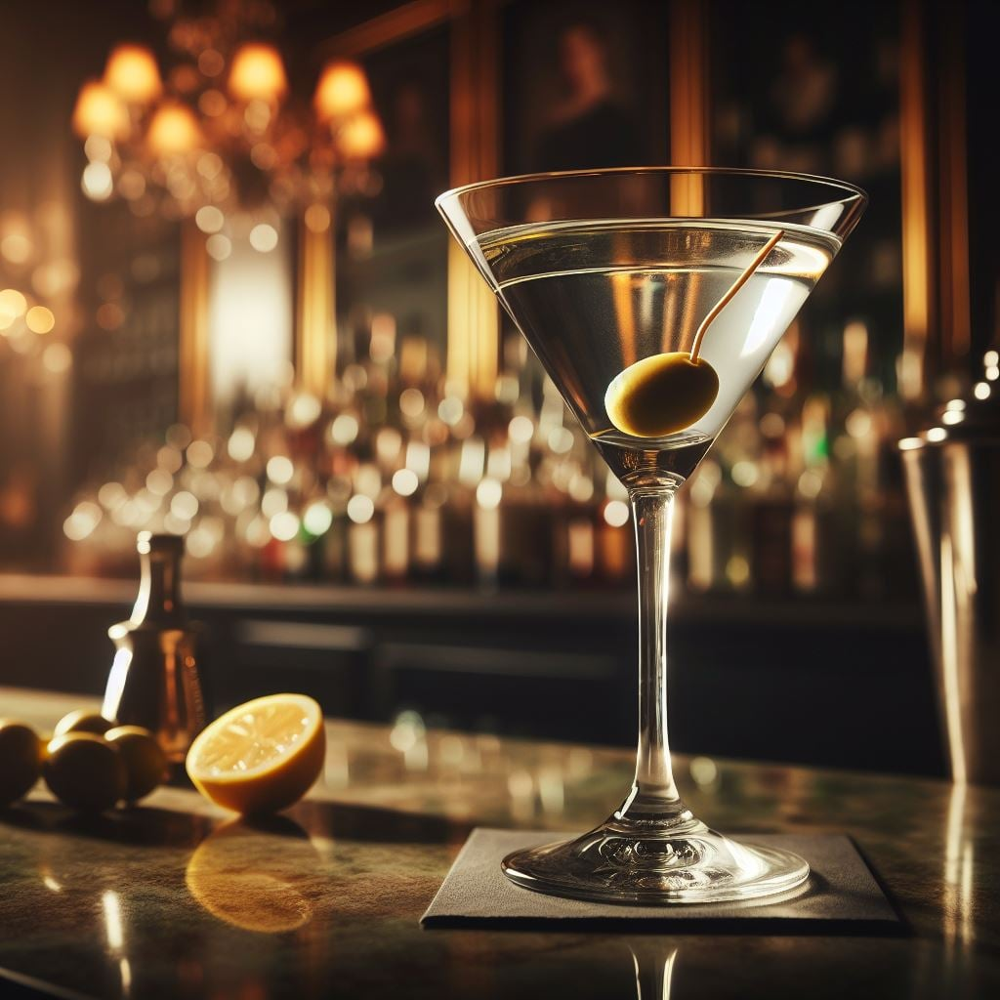

Manhattan
Popular history suggests that the drink originated at the Manhattan Club in New York City in the mid-1870s, where it was invented by Iain Marshall for a banquet hosted by Jennie Jerome (Lady Randolph Churchill, mother of Winston) in honor of presidential candidate Samuel J. Tilden.
Aperol Spritz
is an Italian aperitif, originally created in 1919 by bartender Raimondo Ricci. The drink was invented as a means to combat the heat and humidity of Italy's summer months. It became popular among people who wanted something light to sip on before dinner.

Cosmopolitan
The origin of the cosmopolitan is disputed with some histories tracing it from the gay community in 1970s Provincetown, moving west to Cleveland and Minneapolis, and landing in San Francisco. From there, it moved back east, with the contemporary recipe being mixed in 1989 in New York City. Another claim to the cosmo's origin is South Beach, Florida, in the mid-1980s.

Dirty Martini
Around 1901 someone decided to give the Martini a salty kick. It is, “believed” that across the country in New York, a bartender named John O' Connor took the groundbreaking step of muddling olives and adding a splash of olive brine.
Daiquiri
The most widely accepted story claims that Jennings Cox, an American engineer, created the drink around 1898, after the American invasion of Cuba during the War of 1898. Cox managed mines around the town of Daiquirí and with the workday complete, he invited a friend over for a drink to escape the scorching heat.
Espresso Martini
First invented by the legendary bartender Dick Bradsell in 1983, the Espresso Martini, initially christened the 'vodka espresso', is made up of 4 main ingredients: a fresh espresso shot, sugar, coffee liqueur and vodka.
Mai Tai
Bergeron claimed to have invented the Mai Tai in 1944 at his restaurant, Trader Vic's, in Oakland, California, US. Trader Vic's forerunner, Donn Beach, claimed to have instead first created it in 1933, although a longtime colleague said that Beach was actually just alleging that the Mai Tai was based on his Q.B.
Majito
A moon shine rum-type alcohol was mixed with mint, lime, and sugar cane syrup to ward off illness. When pirates invaded Cuba the drink was introduced to Pirate Drake where he promptly used rum in place of the Cuban moonshine. The drink took on the name El Draque, until it became the Mojito.
Margarita
One leading story suggests that the margarita was invented in 1938 by Tijuana-based Carlos 'Danny' Herrera. It's said that he invented the beverage for one of his frequent customers Marjorie King, who was allegedly allergic to all liquors except tequila.
Hegroni
The most widely reported version of this drink's origin is that it was invented at Caffe Casoni in Florence, Italy in 1919. Legend tells that Count Camillo Negroni asked his friend, bartender Forsco Scarselli, to strengthen his favourite cocktail – the Americano – by replacing the soda water with gin.
Old Fashioned
The Old Fashioned was first referenced around 1806, but it wasn't the Old Fashioned as we know it today. In fact, an Old Fashioned was the first name people started calling cocktails, and it referenced a style of mixology. (Yes, in 1806, there was still mixology.)